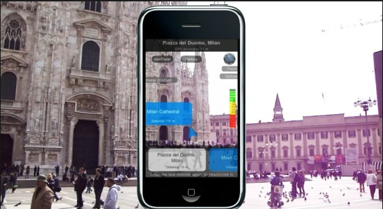
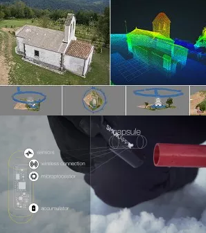

Misión
Promover el turismo urbano a través de la realidad aumentada.

Visión
La realización de actividades por parte del hombre con el fin de lograr el convencimiento en la con servacón de nuestro patrimonio cultural
Realidad Aumentada
Inclusión en tiempo real de elementos virtuales en un entorno físico
Una tecnología que no ha sido muy explotada y puede brindar al usuario una experiencia más enriquecedora.
Servicios
Creación de rutas por parte de los usuarios, y buscar rutas sugeridas por otras personas.

El uso de la realidad aumentada
Permite al turista adquirir una experiencia más enriquecedora. Tourist 4.0 es una aplicación que permitirá crear rutas. Adicionalmente se ofrece a las empresas, restaurantes que estén en la ruta subscripciones de manera que el turista pueda aprovechar las ofertas de los lugares cercanos a los lugares escogidos.

El modelamiento en 3D
es una técnica utilizada en computación gráfica, y de un costo muy alto, ya que la construcción de la malla de puntos involucra un poder computacional alto. Existen herramientas para realizar modelado, lo cual tomaría mucho tiempo y trabajo, ya que modelar es un proceso largo y pesado. En el sitio Web de Tourist encontrará un opción que indica como generar modelos, a partir de las imágenes o postales que tomamos en nuestro viaje, como un recuerdo.

Costo del Servicio de Modelado
Nuestro servicio de modelado permitirá generar el modelo 3D en instantes, previo pago del costo, el costo del modelo a descargar dependerá el tiempo de demorá de la creación del modelo, de manera que sea un pago justo. Se descargará el archivo con el modelo 3d, y si necesitaría buscar una impresora 3d, podríamos recomendarle alguna, o realizar el servicio de impresión 3d.

Subscripciones de restaurantes y empresas dentro de la ruta
El costo de la subscripción es de 20 Soles mensual.

Publicidad
Pago por anuncios pulicitarios en la aplicación
Proyectos
 Realidad Aumentada aplicada al turismo
. ________________________________________ .La aplicación desarrolla estará disponible tanto en Android como Ios y se usarán servicios cloud.
Modelamiento 3D
. ________________________________________.El modelamiento 3D es un técnica con un costo computacional alto, pero nuestro equipo cuenta con los mejores profesionales en el área.
Equipo

Wilmer Romero Ampuero
Analista Programador
Bachiller en Ingeniería de Sistemas de la Universidad Nacional de San Agustín, de primer nivel con práctica de valores como: la iniciativa, responsabilidad, honestidad y puntualidad con formación de primer nivel, teniendo experiencia laboral en trabajo en equipo. Asimilo con celeridad nuevas ideas y conceptos, desarrollo soluciones creativas e innovadoras. Soy una persona proactiva, con capacidad de trabajo en equipo y tomando el liderazgo en los proyectos exigiéndome al máximo para desarrollar un buen proyecto. Actualmente me encuentro estudiando una maestría en Tecnologías de la Información en la Universidad Nacional de San Agustín.


Especialista en desarrollo de Software
Experiencia en C#, .Net, Android, Sql Server, mis areás de interés son Minería de datos, Sistemas Embebidos, e Internet de las cosas. Algunos proyectos desarrollados son el sistema de control de accesos en el Aeropuerto Internacional Jorge Chavéz e implementación del Sistema PAS. Desarrollo de otros sistemas.
Blog
-

Todo lo que tiras a la basura regresa
3 de Mayo del 2018
El daño que le hacemos al medio ambiente es irreversible. De esta manera podemos tomar conciencia de no tirar basura en la calle y reciclar en casa, nuestros propios desperdicios.
-

Las bolsas de plástico matan
10 de Mayo del 2018
¿Sabía usted que el plástico es el artículo número uno que contamina nuestros océanos, además de las colilla de cigarrillos?
-

Cuando dejas las luces encendidas
12 de Mayo del 2018
Si quieres reducir tu consumo de electricidad, la primera medida es instaurar como regla familiar que cada vez que una persona abandona una habitación debe apagar la luz